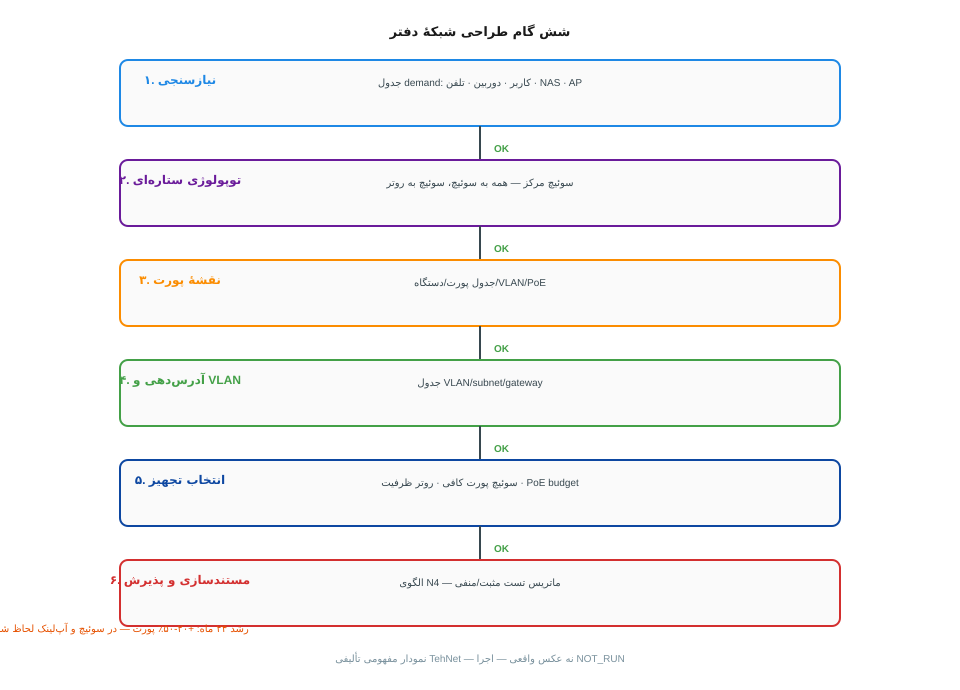

وضعیت درس: DRAFT / NOT_DEPLOYED — در انتظار مرور. (درس مصوب سرفصل N1: طراحی دفتر)
آموزش تصویری از سری پشتیبانی؛ مخاطب: مدیر IT و کارشناس شبکه.
سناریوی کاملاً فرضی و آموزشی با دادهٔ ساختگی؛ هیچ شبکهٔ واقعی دستکاری نشده و هیچ اجرای واقعی NOT_RUN است.
نمودار مفهومی و تألیفی است (نه عکس واقعی).
طراحی شبکهٔ دفتر شش گام دارد: نیازسنجی (تعداد کاربر/سرویس/رشد) → انتخاب توپولوژی (ستارهای — سوئیچ مرکز) → نقشهٔ پورت (هر پورت چه دستگاهی؟) → آدرسدهی (subnet + VLAN) → انتخاب تجهیز (سوئیچ/روتر/AP/آپلینک) → مستندسازی و آزمون پذیرش (الگوی N4). طراحی خوب از برگهٔ نیازسنجی شروع میشود؛ طراحی بد از «اول سوئیچ بخریم بعد ببینیم چی لازمه».
| بند | مقدار فرضی |
|---|---|
| سازمان | دفتر کوچک — ۱۲ نفر + ۴ دوربین + ۴ تلفن IP + ۱ NAS + ۱ سرور |
| رشد | +۵۰٪ در ۲۴ ماه |
| اینترنت | فیبر 100 Mbps (ISP) |
| فضا | یک طبقه — یک رک شبکه |
| بودجه | متوسط — بدون redundancy سختافزاری در این فاز |
| اجرای واقعی | NOT_RUN — طراحی آموزشی |
| سرویس | تعداد | مشخصه | VLAN | PoE |
|---|---|---|---|---|
| کاربران دفتر | ۱۲ | PC + تلفن IP (هر دو روی یک پورت با VLAN voice) | 10 + 30 | بله (تلفن) |
| دوربین IP | ۴ | PoE + VLAN جدول | 20 | بله |
| تلفن IP | ۴ | PoE + VLAN voice | 30 | بله |
| NAS | ۱ | 1G (فعلاً) — ارتقای 10G فاز بعد | 40 | خیر |
| سرور | ۱ | 1G (فعلاً) | 40 | خیر |
| چاپگر شبکه | ۱ | 1G | 10 | خیر |
| AP مهمان | ۱ | VLAN جدا | 50 | بله (اختیاری) |
| جمع پورتهای سوئیچ | ۱۲ کاربر+تلفن + ۴ دوربین + ۱ AP + آپلینک = ≥ ۱۸ پورت |
اینترنت (فیبر 100 Mbps)
│
┌────┴────┐
│ hEX │ روتر — فایروال/NAT/DHCP/DNS
└────┬────┘
│ (uplink 1G)
┌────┴────────┐
│ CRS326 │ سوئیچ ۲۴ پورت — VLAN trunk
└──┬──┬──┬──┬─┘
┌────────┘ │ │ └────────┐
┌────┴───┐ ┌────┴─┐ ┌┴──────┐ ┌──┴─────┐
│ کاربران│ │دوربین│ │ تلفن │ │ NAS/سرور│
│ VLAN10 │ │VLAN20│ │VLAN30 │ │ VLAN40 │
└────────┘ └──────┘ └───────┘ └────────┘| معیار | محاسبه | نتیجه |
|---|---|---|
| پورت لازم | ۱۲ کاربر+تلفن + ۴ دوربین + ۱ AP + ۱ NAS/سرور + ۱ آپلینک + رشد ۳ = ≥ ۲۲ پورت | CRS326-24G-2S+RM (۲۴ پورت + ۲×SFP+) |
| PoE budget | ۴ تلفن × 5W + ۴ دوربین × 12W = 68W | CRS326 PoE budget کافی (سند رسمی) |
| آپلینک | SFP+ 1G (فعلاً؛ رشد → 10G) | — |
| پورت سوئیچ | دستگاه | VLAN | PoE |
|---|---|---|---|
| ether1-4 | کاربران ۱-۴ (VLAN10 access) | 10 | خیر |
| ether5-8 | کاربران ۵-۸ + تلفنها (VLAN10+30) | 10 + 30 | بله (تلفن) |
| ether9-12 | کاربران ۹-۱۲ + تلفنها (VLAN10+30) | 10 + 30 | بله (تلفن) |
| ether13-16 | دوربینها (VLAN20 access) | 20 | بله |
| ether17 | NAS (VLAN40 access) | 40 | خیر |
| ether18 | سرور (VLAN40 access) | 40 | خیر |
| ether19 | چاپگر (VLAN10 access) | 10 | خیر |
| ether20 | AP مهمان (VLAN50 access) | 50 | بله |
| ether21-24 | آزاد (رشد) | — | — |
| sfp-sfpplus1 | آپلینک به hEX (ترانک) | trunk | — |
| VLAN | نام | subnet | gateway |
|---|---|---|---|
| 10 | کاربران | 192.168.10.0/24 | 192.168.10.1 |
| 20 | دوربین | 192.168.20.0/24 | 192.168.20.1 |
| 30 | تلفن | 192.168.30.0/24 | 192.168.30.1 |
| 40 | سرور/NAS | 192.168.40.0/24 | 192.168.40.1 |
| 50 | مهمان | 192.168.50.0/24 | 192.168.50.1 |
| 88 | مدیریت | 192.168.88.0/24 | 192.168.88.1 |
| نقش | مدل | دلیل |
|---|---|---|
| روتر | hEX (RB750Gr3) — ۱۲ کاربر | کافی؛ ارتقا به RB5009 با رشد |
| سوئیچ | CRS326-24G-2S+RM | ۲۴ پورت + ۲×SFP+ آپلینک |
| AP مهمان | هر AP با VLAN tagging | VLAN50 |
مستندات تحویل: نقشهٔ پورت، جدول VLAN/آدرس، export پیکربندی نهایی، ماتریس پذیرش تکمیلشده (الگوی N4). آزمون پذیرش: از هر VLAN یک تست مثبت + یک منفی (الگوی M2 جدول ۱۴ ردیفی).

شرح متنی نمودار (جایگزین تصویر برای دسترسپذیری): شش گام از چپ به راست: «۱ نیازسنجی» (جدول demand) → «۲ توپولوژی ستارهای» → «۳ نقشهٔ پورت» (جدول پورت/دستگاه/VLAN) → «۴ آدرسدهی» (جدول VLAN/subnet) → «۵ انتخاب تجهیز» (روتر/سوئیچ/AP) → «۶ مستندسازی و پذیرش» (الگوی N4). زیر نمودار: جعبهٔ «رشد ۲۴ ماه» با فلش به گام ۱. برچسب «تألیفی/مفهومی».
| خطا | چرا گران است | درست |
|---|---|---|
| بدون نیازسنجی سوئیچ خریدن | پورت/ظرفیت کم یا بیش از حد | جدول demand اول؛ بعد سوئیچ |
| آپلینک فراموششده | سوئیچ دوم بدون مسیر به روتر | آپلینک در نقشهٔ پورت |
| بدون VLAN از روز اول | بعداً افزودن VLAN = دستکاری همهٔ پورتها | از روز اول VLAN طراحی شود حتی اگر فعلاً فقط VLAN10 استفاده میشود |
| رشد نادیده گرفته شده | ۶ ماه بعد سوئیچ دوم لازم میشود | +۲۰-۵۰٪ رشد در تعداد پورت |
| بدون مستندات تحویل | هر تغییر بعدی بدون مرجع | الگوی N4: ۶ سند تحویل |